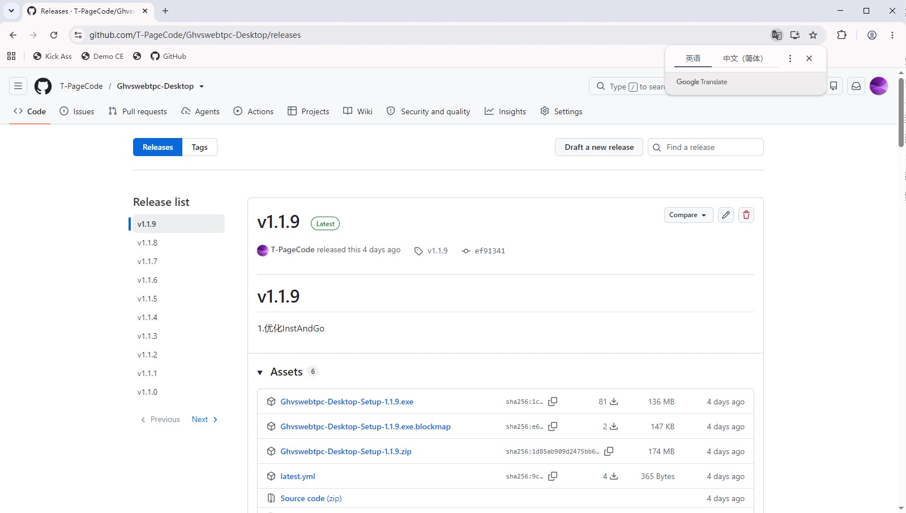
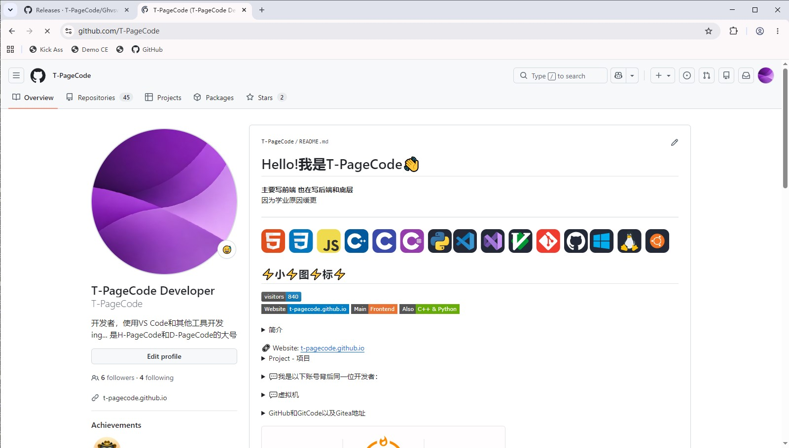
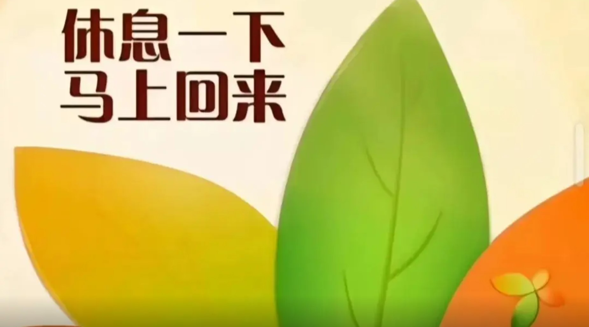

更新较慢说明
8月更新最多，为什么9月有降落？
问题最严重的是学业压力。
8月暑假更新很多，但是9月上学后一直有写不完的作业，只能写完作业再提交。
严重：Ghvswebtpc
最近因为T-CodeSystem在8月出了所以一直把T-CodeSystem当主力项目。
但是Ghvswebtpc那个老古董 —— 6月出的。
比T-CodeSystem还要老，这是第一个仓库。
但起初，它并不糟糕，以前的主页有毛玻璃效果，系统除了自适应也没啥不好看的。
但是随着项目多了，再加上T-CodeSystem，Ghvswebtpc更新比之前明显慢了。
唯一一个更新较多的Ghvswebtpc版本 —— Ghvswebtpc Desktop
Ghvswebtpc Desktop是目前T-PageCode唯一一个让网页版系统变成桌面应用的版本。
反观T-CodeSystem只有网页版，这明显优势更多。
但是最近更新还是有点慢。
目前最新版本是v1.1.9，请看GitHub图片：

T-CodeSystem计划出桌面版
对的，计划出桌面版了。但是需要实时跟着网页版，只要没有跟进，体验直接差了。
所以就是：T-CodeSystem + Ghvswebtpc Desktop + 实时更新网页版 + 一堆项目
那就是原因：
饿啊！项目太多了！维护不过来了！只能缓更了。
主页也写了，因为学业原因缓更。

目前状态
写完这个写那个，写完那个写这个...写完这个写那个，写完那个写这个...
T-CodeSystem写完紧随其后又是一大堆项目，我~已~急~哭

休息一下，马上回来，休息了114514个小时，代码更新慢，因为项目多≡(▔﹏▔)≡
老项目也不会放弃
老项目最近还在更新，为什么？
因为：不想抛弃所有的项目
但是，还是因为学业原因，这些老项目更新也变少了。
所以现在状态就是停停停，写写写，停停停，写写写。
有时候还发生了断网的情况，导致代码写完了也没法提交。
放假“翻盘”
放假就不一样了，提交比周一到周五多的很！
至少有5次提交，但如果空白？要么电脑没网或者没力气或者出去了。
那为什么出去不带电脑呢？这个很简单了，电脑是台式机不是笔记本。
<@_@>